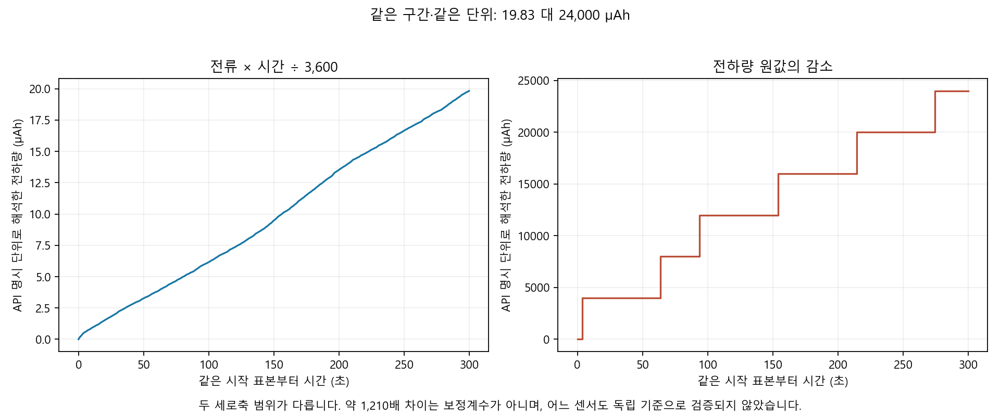

A24 전류·전하량 불일치 조사
원인 진단용입니다. 에너지 J는 미판정이며 임의 배율 보정은 적용하지 않았습니다.
한국어 상세 보고서
counter_changes.csv
duplicate_copies.csv
intervals.csv
lossless_copy_selection.csv
published_CSV_recalculation.csv
source_inventory.csv
